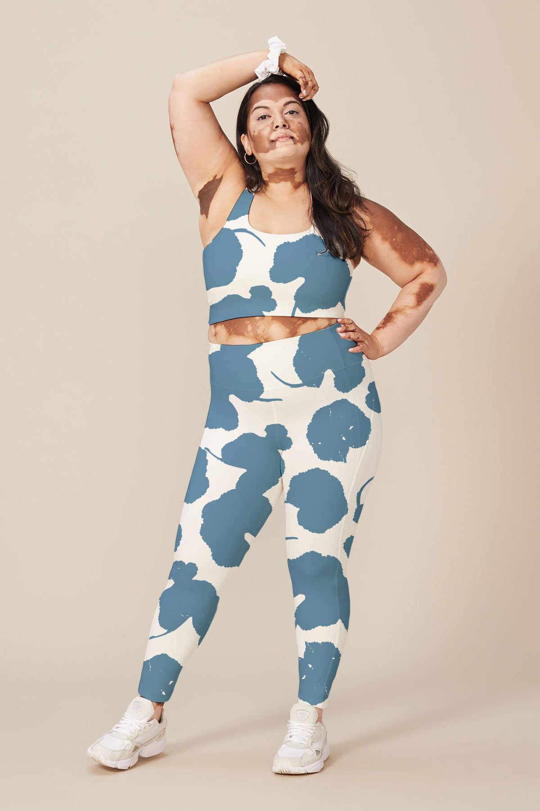
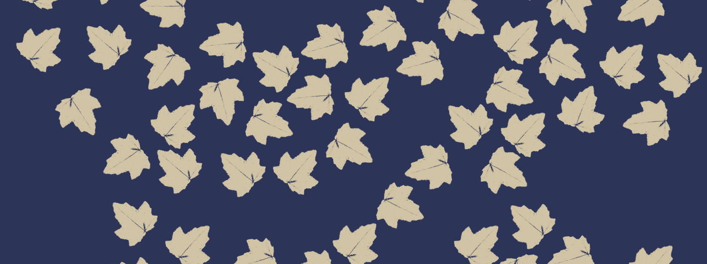

Recent Communication Design graduate of Monash University.
Graphic designer with multidisciplinary approach. Mixing fields of branding, publication and digital design.
✕
CONTACT
isabellageorgakis@hotmail.com
0428 453 222
@byisabella__
Not For Nothin'
In the current (and ongoing) state of world affairs, it is that clear communication is vital. Across climate emergencies, health crises and social movements; impactful and informative messaging has been key. Not For Profit (NFP) and grassroots organisations are where we commonly look to gain knowledge and direction. However, NFP’s will often be under-resourced and held back by poor communication. Designers play a crucial role in improving this.
For this project, I focused on the non-for-profit organisation, Zero Waste Victoria. I rebranded the identity of organisation, creating a new visual language that reflects the importance of community and collaboration, while referencing the process of a Zero Waste life and its significance. In addition, I created a e-publication as a major collateral item for the organisation that contains all the information and updates that the Zero Waste Community might require.
Experience Slovenia
Experience Slovenia is the fictional rebrand of the slovenian tourism brand ‘I Feel
Slovenia’. This rebrand shows an identity evolution that connects to culture, nature and the importance of ‘green’ tourism. The project also included campaigns targeting key travel destinations. All of this is documented in an updated brand book.
Observation
This project was formed from observations of the suburb, Elwood. I created patterns from collected flora and photography of the suburb, which were then applied to a various activewear pieces such as a puffer jacket, leggings and a crop top. Adding to this athleisure line, I incorporated the corresponding patterns onto delivery boxes and created postcards to include in each order to provide information about the sources of the patterns which are the elements of the beach, the canal and streets.


Slow Fashion
Slow Fashion: Aesthetics meets Ethics is an informative publication around the social issue of Fast Fashion. This publication educates about the importance of the Slow Fashion Movement and provides ways people can make a change themselves. The design is soft and delicate to shine a positive light on the change that can be made.
Exhibit A
Exhibit A was a self-directed project that spanned the full eight weeks of my study abroad experience in Prato, Italy. My Exhibit A project was titled “Piecing it Together.” This project is about my unique experience broken into the stages of the highs and the lows, the unfamiliar and familiar and the ways in which these evolve and reform. Using gathered items such as brochures, postcards, tags, receipts, little booklets and tickets from all the places visited, I cropped and collaged to create a series of five that document five different stages of this course.
Admittance Archive
The Admittance Archive consists of a variety of objects and pieces that represent things that give one access or admit one to a space. These objects vary in their materials, size or purpose and this can be explored through the filter. The collection documents and compares the way in which people were given access to spaces hundreds of years ago to how they are given access to spaces today.
What’s What was inspired by the topic of ‘fake news’. Fake news, misinformation and disinformation is very relevant and commonly spoken about in the news and on social media. It can be hard to differentiate between what is real and what is false sometimes. With this in mind, I based my website on the concept of two truths and one lie. The idea is that every day two true articles and one false article is posted. It is not obvious which ones are true and which ones are false.
The name What’s What, which has a double meaning. What’s what is usually defined as ‘the important facts that you should understand about a situation’, however not all the articles are facts, so it also means that readers need to have the ability to determine ‘What’s What’, true or false news.